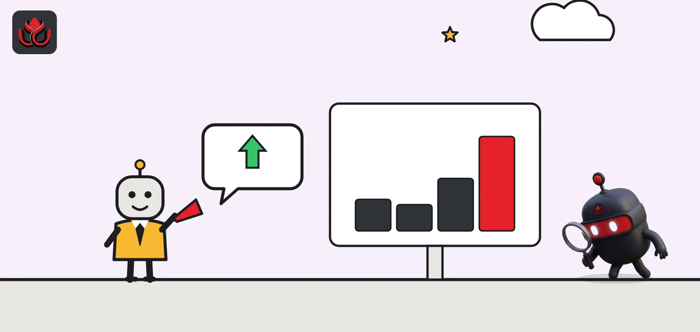
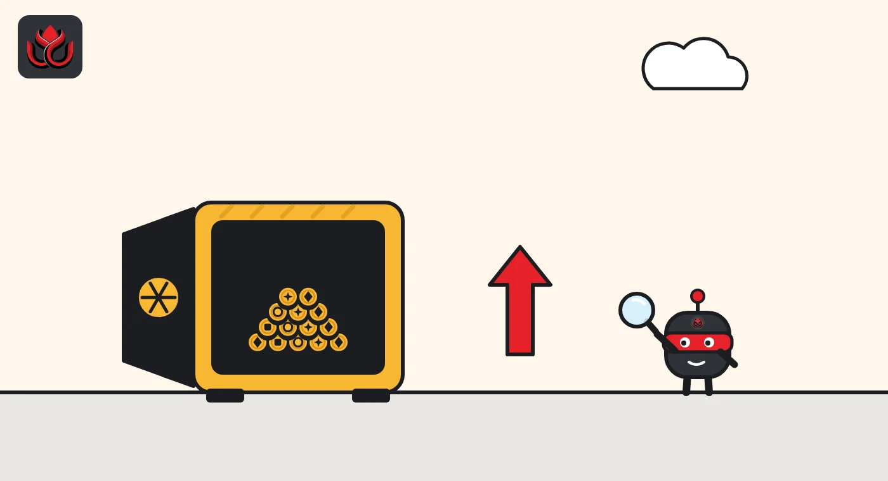
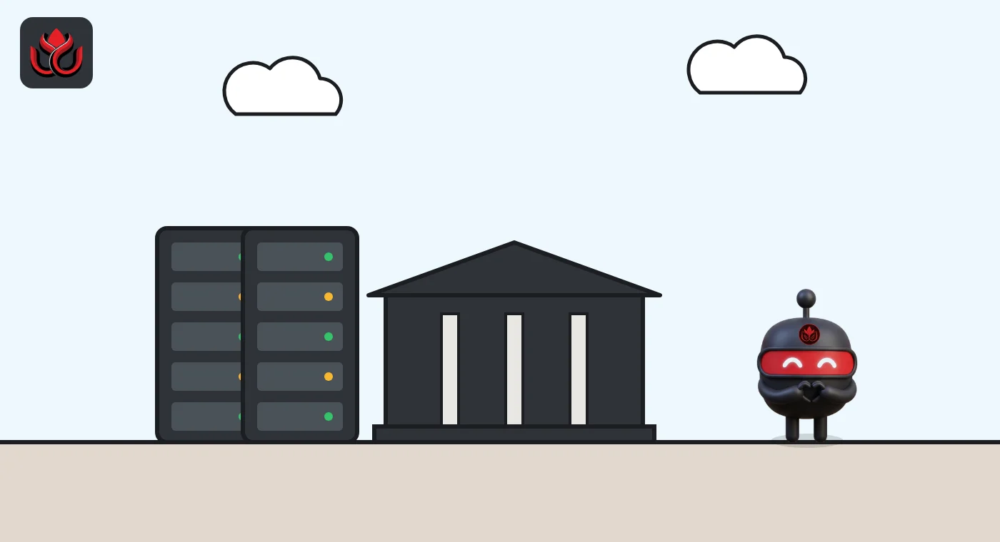

Galaxy earned $323 million in Q3, mostly on its own holdings. Trading still lost money
Mike Novogratz's Galaxy turned an $85 million Q2 loss into a $323 million Q3 profit and approved another $200 million buyback. Most of the gain came from its own investments, while data centers became a steady earner.

Key points
- Galaxy made $323 million in Q3 2026 after an $85 million loss in Q2, and approved a new $200 million share buyback.
- Most of the profit came from its own investments. The trading, lending and asset management unit still lost $9 million on adjusted EBITDA.
- Its Helios data centers made $79 million in adjusted gross profit in the first full quarter of CoreWeave lease income.
The results and the buyback
Galaxy Digital, the crypto financial services firm led by Mike Novogratz, reported its third-quarter results on October 27, 2026. Net income was $323 million, compared with a loss of $85 million in the second quarter, according to its earnings release filed with the SEC. Diluted earnings per share were $0.66.
Adjusted EBITDA, a measure of operating profit before interest, tax and some non-cash items, was $455 million, after a $77 million loss in Q2. Galaxy also said its board approved a new buyback of up to $200 million of Class A shares on October 26. The previous $200 million program, announced in February 2026, was completed on October 15 after Galaxy bought back about 9.8 million shares.
Novogratz said the company stays focused on "disciplined execution and creating long-term value for our shareholders." He pointed to strong appreciation across Galaxy's investment portfolio and growth in data centers.
Where the profit came from
Galaxy reports three segments, and they told very different stories. Treasury and Corporate, which holds the company's own investments, posted $419 million in adjusted gross profit and $395 million in adjusted EBITDA. In Q2, the same segment lost $42 million and $78 million, the release shows. Its holdings span spot crypto, derivatives, ETFs, equities and venture and fund stakes, including an investment in Solana treasury company Forward Industries.
Data Centers, the business that leases power and space to AI computing customers, made $79 million in adjusted gross profit and $69 million in adjusted EBITDA, up from $20 million and $11 million in Q2. Digital Assets, which covers trading, lending and asset management, earned $71 million in adjusted gross profit but posted an adjusted EBITDA loss of $9 million, a little better than the $11 million loss in Q2.
Total adjusted gross profit was $569 million, against $43 million in the second quarter.
Galaxy Q3 2026 adjusted gross profit by segment
US$ million
Source: Galaxy Q3 2026 release. Total adjusted gross profit was $569 million.

The trading business grew in a shrinking market
The release says Galaxy's digital asset trading volumes rose 12% from Q2 while the wider spot market declined. It had 1,763 trading counterparties, up from 1,741. The average loan book grew 27% to $1.8 billion from $1.4 billion.
Assets under management and assets under stake, meaning coins clients have delegated to Galaxy for staking, together reached $10.4 billion, up 46% in a quarter. ETFs held $2.5 billion, alternative funds $3.3 billion and staked assets $4.6 billion. In Q2, the three figures were $1.8 billion, $2.6 billion and $2.8 billion, so staking drove most of the growth. Asset management took in more than $160 million of net new money. Galaxy earns fees on each of these, which gives it income that does not depend on its own trading results.
Galaxy ended September with $4.9 billion in cash, stablecoins and US Treasuries, up from $2.5 billion at the end of June. Total equity was $3.0 billion and total assets $16.4 billion, up from $10.8 billion.
Helios: the data center bet
Helios is Galaxy's data center campus in Texas, where it leases power and space for AI computing. By the end of Q2, Galaxy had delivered all 133 megawatts of critical IT load under the first phase of a 15-year lease to CoreWeave, its Q2 release said. At the time, Galaxy expected that phase to bring in about $80 million of leasing revenue a quarter from Q3. The Q3 release calls this the first full quarter of revenue-generating operations under that lease.
The second phase adds 260 megawatts of critical IT capacity. It is fully financed through a $3.5 billion senior secured notes offering completed on July 28, 2026, according to Galaxy's Q2 filing. Data hall deliveries are scheduled to begin in Q2 2027, and Galaxy expects construction to ramp up sharply over the coming months.
Galaxy says 830 megawatts of approved capacity at Helios II is not yet leased, and that talks continue. Its gross power pipeline exceeds 5.7 gigawatts. That pipeline is planned capacity, not built infrastructure. The release gives no numerical forward guidance.

Still below last year
The strong quarter mostly repaired a weak first half. Galaxy's net income for the first nine months of 2026 was $21 million, the release shows, so the Q3 profit offset losses earlier in the year. A year earlier, Galaxy earned about $505 million in Q3 2025, according to the financial supplement in its Q2 filing, so this quarter was still well below that level.
Adjusted earnings per share were $0.83, against diluted earnings per share of $0.66.
The buyback has no fixed expiration date. Galaxy is not obligated to buy any set amount of stock and can suspend or end the program at any time, the release says.
Timeline
Galaxy announces its first $200 million buyback
Q2 ends with an $85 million net loss; all 133 MW of Helios phase one delivered
$3.5 billion notes offering for Helios phase two completed
First buyback program completed
Board approves a new $200 million buyback
Q3 results published
LC Insight analysis
This section is our reading of the facts above, not a statement of fact.
- Read this quarter in two parts. The $323 million profit rests mostly on the value of Galaxy's own holdings, which can swing either way, while the trading business still lost money at the EBITDA line.
- Data centers are the most predictable earner. A 15-year lease with CoreWeave pays regardless of crypto prices, and the second Helios phase should add more from 2027.
- The buyback may support the shares in weak markets. The bigger question is whether Galaxy can find a tenant for the 830 megawatts still unleased at Helios II.
What's next
- A tenant announcement for Helios II
- Q4 marks on Galaxy's digital asset and private investments
- Whether the Digital Assets segment returns to positive EBITDA
- Pace of buybacks under the new program
Disclaimer. This article is based on public information and the sources listed below as of the update time shown. It is for information only and is not investment, legal or tax advice. Figures may change as companies and authorities publish new data.